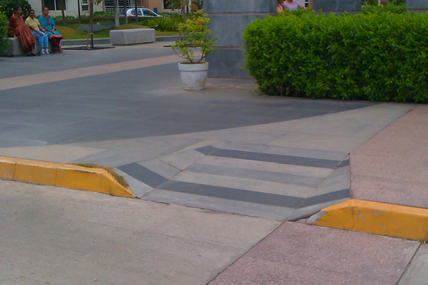
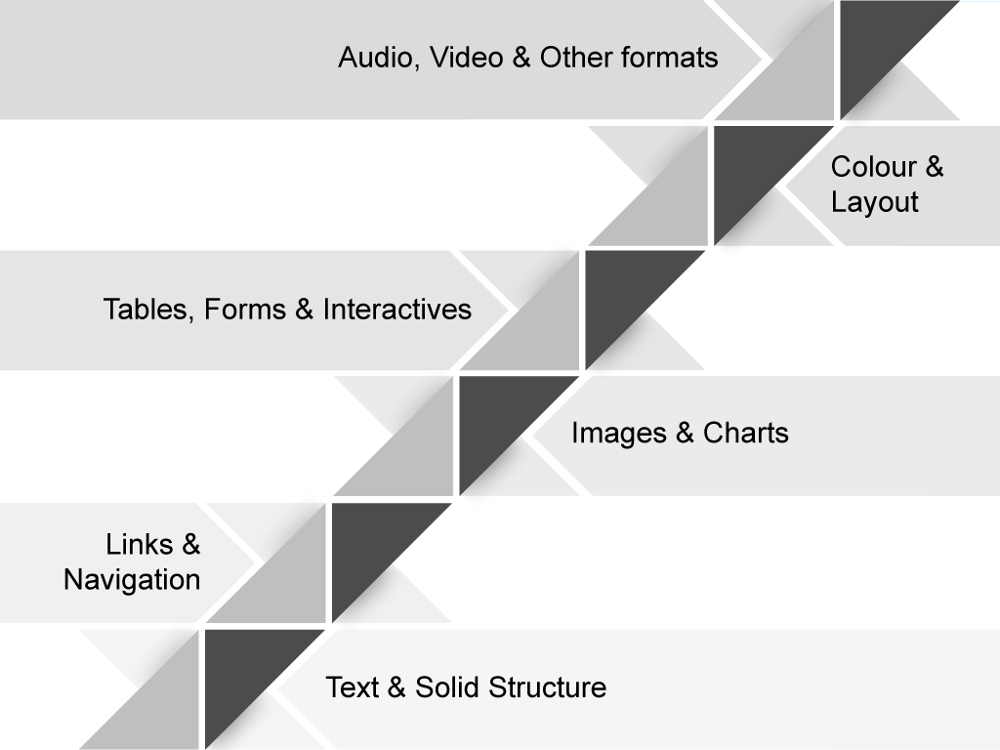
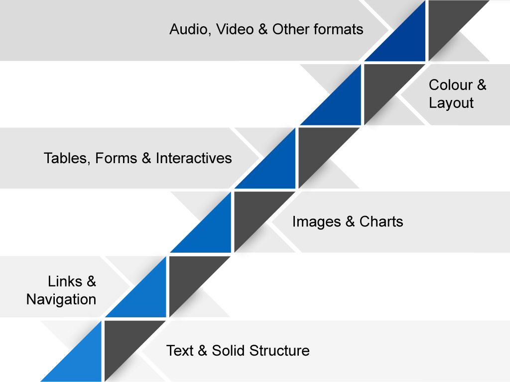
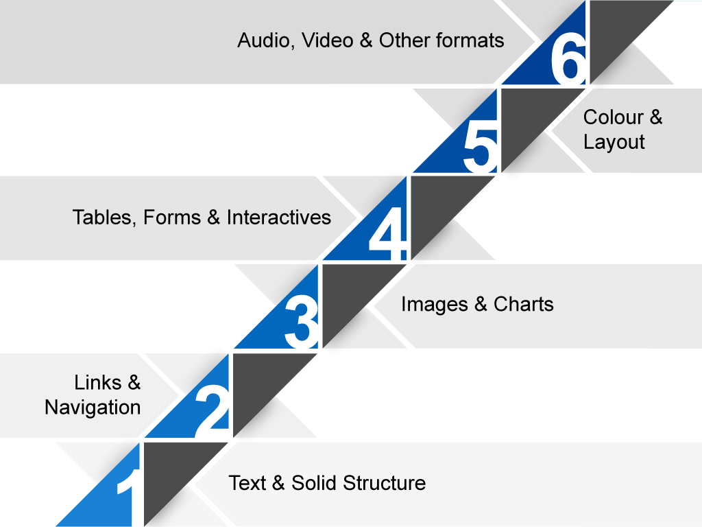

Action based guide for creating accessible websites
OCAD University Nov. 20 & Dec. 5, 2014
Accessibility
What do we mean by accessibility?
involves making allowances for characteristics a person cannot readily change.
(Clark 2003)
Accessibility progression
Through activism and successful legislation, barriers in the physical world have slowly disappeared. In the case of this Apple Store in New York, the elevator, an accessibility feature, is the centre of the store's design.
Directions around the barrier.Universal ramp (front door).

Universal curb cut.Elevator is the centre of the design.
The web is a diverse place
Users employ a diverse range of hardware and software, assistive technologies, to navigate the digital world.
The hardware and software can be highly customized or the same technology that everyone uses, but perhaps used in a different way. People with disabilities are extremely innovative at overcoming barriers and have in fact pushed technological change that benefits everyone. In fact, considering the three personas below, really how can we say they are disabled?
A mismatch between the user and the user interface.
user + barrier = disability
Accessibility
The ability of the system to accommodate the needs of the user.
When we take the responsibility or label of disability off the person and put it on the design, we suddenly see accessibility as an essential part of the design process and design thinking.
Designing Websites (course sites)
[...] to accommodate the needs of the user by ensuring the websites present no barriers.
W3C's Open Web Standards
HTML+CSS+ARIA
Web Content Accessibility Guidelines
Guiding POUR principles
It has 4 main principles are:
Perceivable
users must be able to perceive the information being presented (it can't be invisible to all of their senses). They need to be able to see it, hear it or feel it.
Operable
users must be able to operate the interface (the interface cannot require interaction that a user cannot perform). A user should be able navigate content or fill in a form with the keyboard alone. Operating a mouse cannot be the only option.
Understandable
users must be able to understand the information as well as the operation of the user interface (the content or operation cannot be beyond their understanding). Content should be at the reading level of the audience
Robust
users must be able to access the content as technologies advance (as technologies and user agents evolve, the content should remain accessible). Building to an accessible standard helps future proof your web content or web site.
I break it down into something I can understand. Types of content and design choices. Each of these is a potential barrier or stair.

Build in a virtual ramp
And then for each stair I visualize the techniques needed to make that content accessible as a ramp.

Awareness, Skills & Resources
As we make our way up the staircase, the elements become more complex, thus requiring more awareness, skills and resources to build in the virtual ramp.

Ready for action?
Let's learn how to make our user online content accommodate our users regardless of ability or disability. Let's build in the virtual ramp.
Electronic text is accessible by nature because it can rendered into 3 sensory modes. It can be read as visual text, read aloud as sound and transformed into other formats such as braille. A system can even transform text into images or simpler language.
Navigation, links & landmarks, like stepping stones, take you places and help you find your way. They not only need to look distinctive, they need to sound distinctive. The importance of accessible navigational elements cannot be under estimated they are the foundation of the internet.
Work the development of alternative text into the design process.
Intricacies of alt text
Composing alt text is not as easy as you think, and is not always necessary. A blank alt attribute is appropriate in certain circumstances. Leaving the writing of alternative text to your web developers is not a bullet proof plan.
Cover of Rolling Stone Magazine featuring a photo of David Bowie dressed as Ziggy Stardust, a flamboyant glam persona he created during the early 1970s.
Context is everything. If this was a course about graphic design or political science, the description of the image would be completely different.
Goal: maintain the meaning of the document whether you can see the images or not.
4. Tables, Forms & Interactives
As we make our way up the steps, elements become more complex, and require more skill and resources to make them accessible. Just by their function and purpose, tables and forms are complex structures. To reduce complexity, these elements should be kept as simple as possible.
Forms are where interaction takes place. Many things can go wrong. Our goal is successful completion. Determine data requirements, form flow & error handling first, and look at building:
Plan for keyboard accessibility - needs special attention
Group form controls to create logical order legend, fieldset, optgroup
Provide reasonable time-outs (user control)
Employ ARIA features on forms
4. Tables, Forms & Interactives
Interactives
Gamification of learning activities is very popular in online education. Interactive layouts designed for online engagement are also popular. As we introduce these dynamic feature we have to be careful to not introduce barriers.
Follow web standards. The ARIA can help here as well.
Up until now, we have been focusing on HTML and structure. Now we will turn our attention to how design choices can make the difference between accessible pages or pages with barriers.
People see colour differently, so choose colours wisely.
HTML is the native content type for the web. Thus, the natural choice; however, other document types do exist and find themselves on the web. PDF is the most common.
What to do with PDF and other formats?
Convert to HTML? - feasible? appropriate?
Make it accessible:
Declare the language
Add structural tags
Add alternative text to images
Define the reading order
Problem: none of this happens automatically in PDF. You need access to the source document and a lot of patience.
Léonie Watson
Léonie Watson is a digital accessibility consultant at the Paciello Group. Here's her 4 minute lightening talk that challenges us all, in my opnion, (not just the W3C) to put accessibility into everything we do and to...